A free, growing library of 3D scans of Tunisia’s endangered heritage — mosaics, statues, stelae, and ruins captured by our volunteers. Every model can be explored interactively, and viewed in augmented reality on your phone.
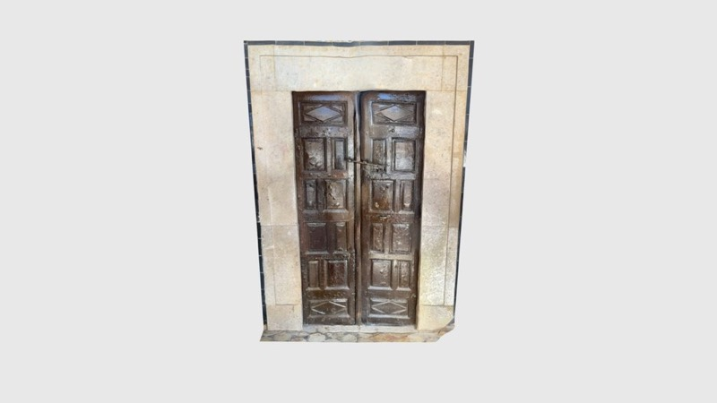


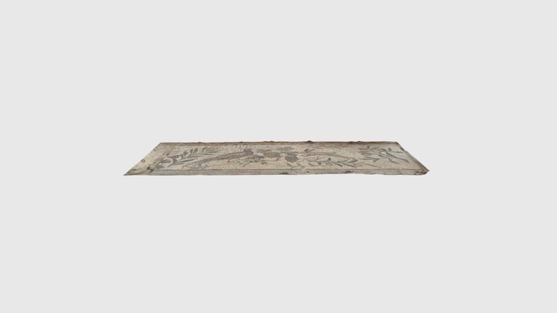
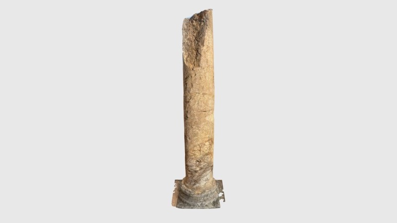
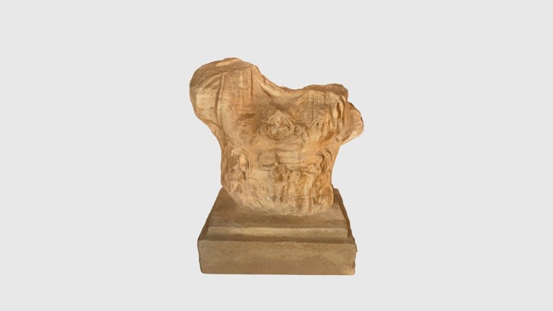
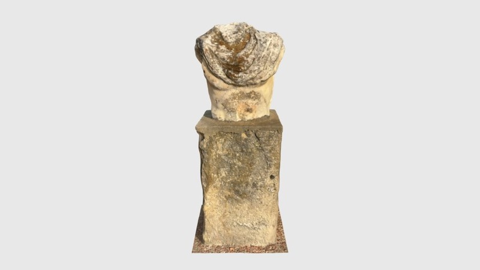
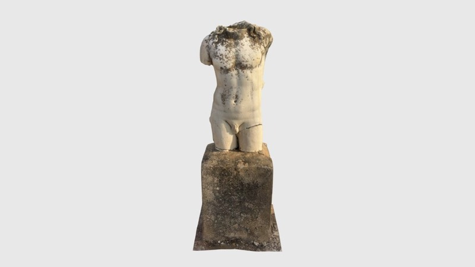
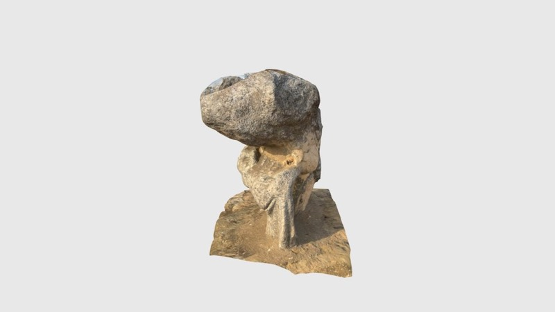
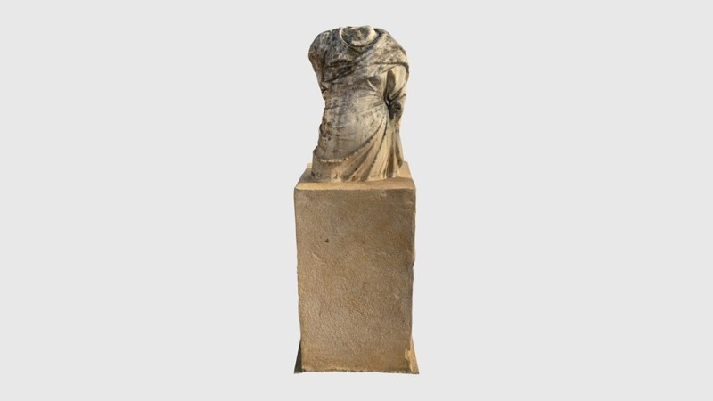
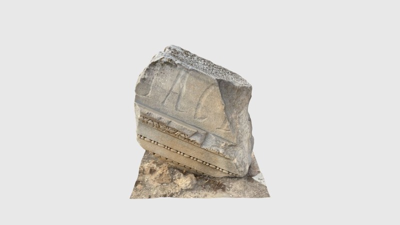
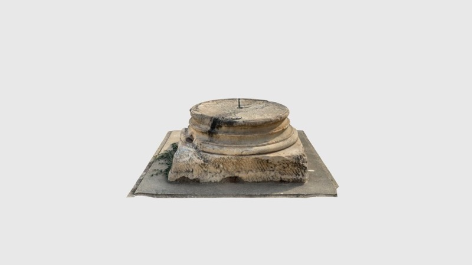
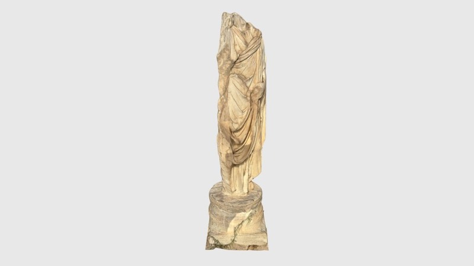
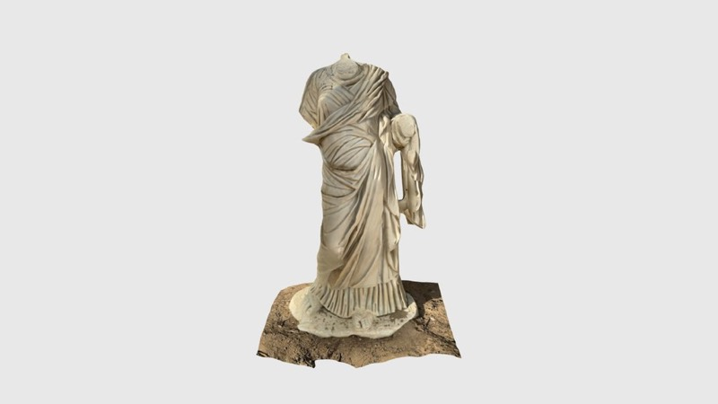
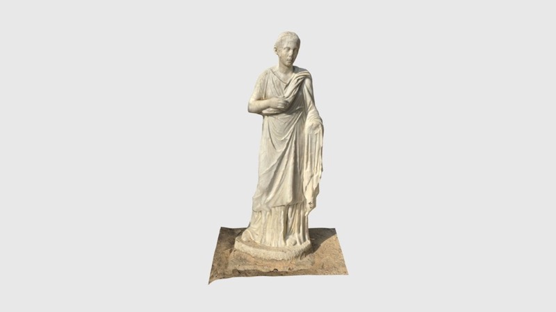
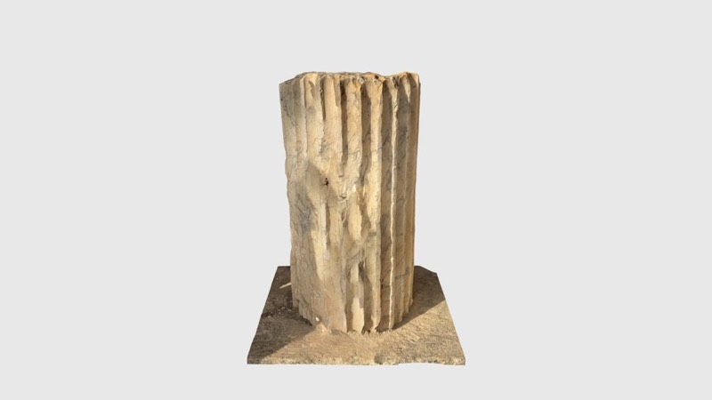
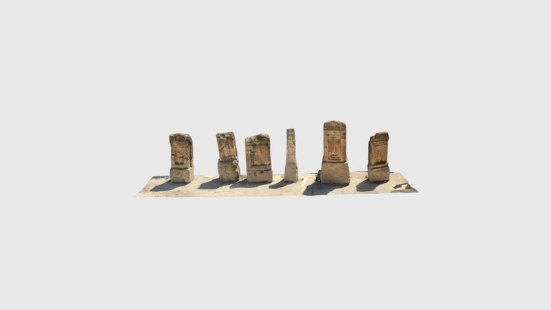
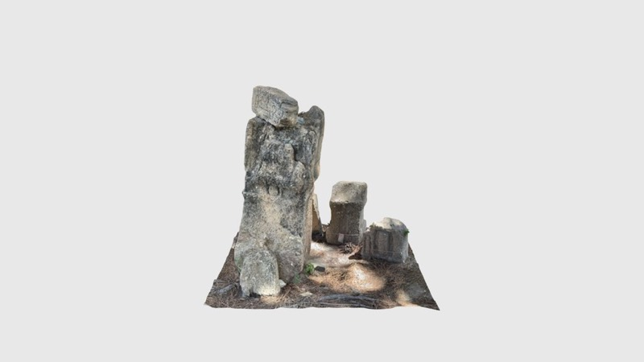
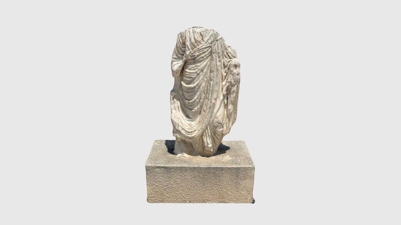
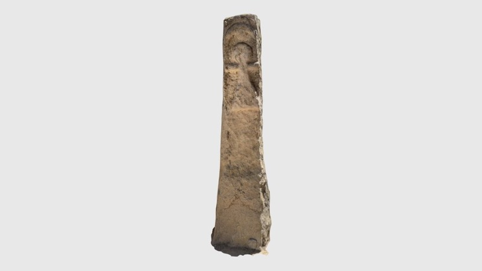
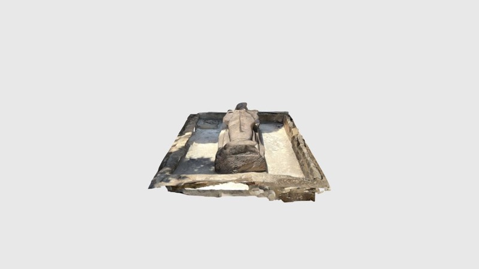
You don’t need to be an archaeologist or a technologist to make an impact. Our first scans were made with a phone. Whether on the ground in Tunisia or helping remotely, every volunteer contributes to preserving history.
Volunteer